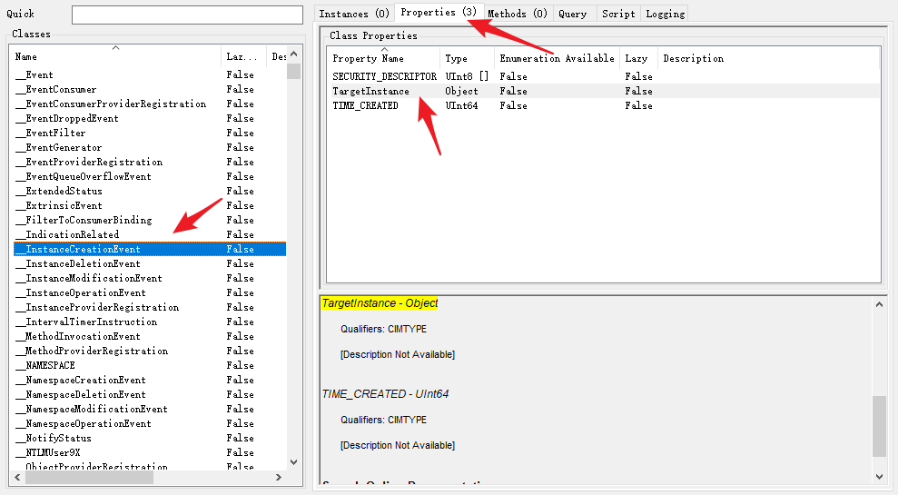
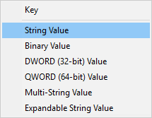
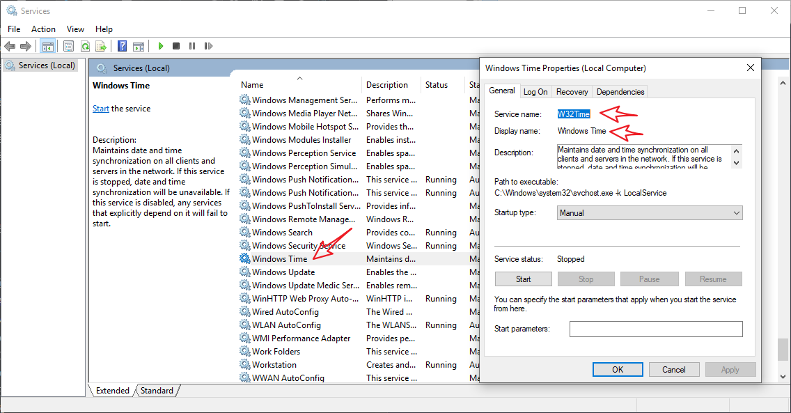
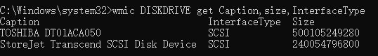

wmi介绍
这里推荐一个辅助软件, WMI Explorer 2.0

可以调用wmi的方式或者语言
* wmic.exe
* winrm.exe
* winrs.exe
* powershell
* windows scripting host(WSH)
* VBScript
* JScript
* mof
* C/C++ via IWbem* COM API
* .NET System.Management classes事件
内部事件
内部事件表示的是创建、修改和删除任何 WMI 类，对象或命名空间的事件。它们也可被用于计时器或 WMI 方法执行的警报。以下内部事件采用了系统类 (以两个下划线开头的那些) 的形式，并存在于每一个 WMI 命名空间:
__NamespaceOperationEvent
__NamespaceModificationEvent
__NamespaceDeletionEvent
__NamespaceCreationEvent
__ClassOperationEvent
__ClassDeletionEvent
__ClassModificationEvent
__ClassCreationEvent
__InstanceOperationEvent
__InstanceCreationEvent
__MethodInvocationEvent
__InstanceModificationEvent
__InstanceDeletionEvent
__TimerEvent这些事件的作用非常强大，因为它们可以被用于在操作系统中几乎任何可以想见的事件的触发器。例如，如果触发了一个基于交互式登录的事件则可以形成下面的内部事件查询:
此查询被转换为创建一个登录类型为 2 （交互式）的 Win32_LogonSession 类的一个实例。
由于触发的内部事件有一定的频率，所以必须在 WQL 查询语句的 WITHIN 子句中指定事件轮询间隔。这就是说，它有时可能错过事件。例如，如果事件查询的形式目的是创建 WMI 类的实例，如果该实例的创建和销毁 (如常见的一些进程 —— Win32_Process 实例) 在轮询间隔内，那么则会错过这一事件。创建内部 WMI 查询时，必须考虑这种可能出现的情况。
SELECT * FROM __InstanceCreationEvent WITHIN 15 WHERE TargetInstance ISA ‘Win32_LogonSession’ AND TargetInstance.LogonType = 2
外部事件
外部事件解决了和内部事件有关的潜在的轮询问题，因为它们在事件发生时立刻被触发。然而美中不足的是在 WMI 中并没有太多的外部事件，不过，所有已经存在的外部事件的作用很强大，性能也很高。下面的外部事件对于攻击者和防御者来说可能是有用的：
ROOT\CIMV2:Win32_ComputerShutdownEvent
ROOT\CIMV2:Win32_IP4RouteTableEvent
ROOT\CIMV2:Win32_ProcessStartTrace
ROOT\CIMV2:Win32_ModuleLoadTrace
ROOT\CIMV2:Win32_ThreadStartTrace
ROOT\CIMV2:Win32_VolumeChangeEvent
ROOT\CIMV2: Msft_WmiProvider*
ROOT\DEFAULT:RegistryKeyChangeEvent
ROOT\DEFAULT:RegistryValueChangeEvent以下外部事件查询形式可以用来捕获每一个进程已加载的所有可执行模块（用户模式和内核模式）：
SELECT * FROM Win32_ModuleLoadTrace
WQL 查询
实例查询
SELECT [Class property name|*] FROM [CLASS NAME] <WHERE [CONSTRAINT]>select * from Win32_NTlogEvent where logfile = 'application'
SELECT Freespace,DeviceID FROM Win32_LogicalDisk*代表的是下图区域3的所有属性(properties).也可以具体指定某些属性,而不是全部(没有*号好用)from 后面接1的类型(Classes)
where 后面可以接属性的参数进行筛选,如下图的3 区域

SELECT * FROM Win32_Process WHERE Name LIKE "%chrome%"事件查询
SELECT [Class property name|*] FROM [INTRINSIC CLASS NAME] WITHIN [POLLING INTERVAL] <WHERE [CONSTRAINT]>
SELECT [Class property name|*] FROM [EXTRINSIC CLASS NAME] <WHERE [CONSTRAINT]>
SELECT * FROM __InstanceCreationEvent WITHIN 15 WHERE TargetInstance ISA 'Win32_LogonSession' AND TargetInstance.LogonType = 2
交互式用户登录的事件查询触发器strComputer = "."
Set objWMIService = GetObject("winmgmts:\\" & strComputer & "\root\cimv2")
Set colMonitorProcess = objWMIService.ExecNotificationQuery _
("SELECT * FROM __instancemodificationevent WITHIN 10" & _
"WHERE TargetInstance ISA 'Win32_Service'")
WScript.Echo "Waiting for process change event ..."
Set objLatestEvent = colMonitorProcess.NextEvent
WScript.Echo VbCrLf & objLatestEvent.Path_.Class
Wscript.Echo "Process Name: " & objLatestEvent.TargetInstance.Name
Wscript.Echo "Process ID: " & objLatestEvent.TargetInstance.ProcessId
Wscript.Echo "Process State:" & objLatestEvent.TargetInstance.state
WScript.Echo "Time: " & Now元查询
用于查询WMI类架构
SELECT [Class property name|*] FROM [Meta_Class<WHERE [CONSTRAINT]>OPTIONAL-META-WHERE = ["WHERE __THIS ISA" <CLASS-NAME>]vbs 使用 vmi
vbs脚本操作wmi对象的时候，有两种方法 winmgmts:\\ 和WbemScripting.SWBemlocator
不过这两者是有异同的，SWbemlocator可以做到WMI moniker不能做到的两个功能（SWbemlocator is designed to address two specific scripting scenarios that cannot be performed using GetObject and the WMI moniker， You must use SWbemLocator if you need to)：
provide user and password credentials to connect to WMI on a remote computer. The WMI moniker used with the GetObject function does not include a mechanism for specifying credentials.
Connect to WMI if you are runing a WMI script from within a Web page.
如下是vbs两种声明的方式
strComputer="."
set objService = GetObject("winmgmts:\\" & strComputer & "\root\cimv2")
'set objWmi = CreateObject("WbemScripting.SWBemLocator")
'set objService = objWmi.ConnectServer(strComputer, "root\cimv2")
set objSet = objService.InstancesOf("Win32_Process")
'set objSet = objService.ExecQuery("SELECT * FROM Win32_process")
for each obj in objSet
Wscript.Echo "Name: " & obj.Name
Next创建对象并连接服务器
Set objWMIService=GetObject("winmgmts:{impersonationLevel=impersonate}!\\"&strComputer&"\root\cimv2:Win32_Process")例子
操作注册表
读取注册表Value

const HKEY_CURRENT_USER = &H80000001
'Replace the dot with a computer name or IP to use any other than the local machine
strComputer = "."
Set oReg=GetObject("winmgmts:{impersonationLevel=impersonate}!\\" & strComputer & "\root\default:StdRegProv")
strKeyPath = "Console"
strValueName = "HistoryBufferSize"
oReg.GetDWORDValue HKEY_CURRENT_USER,strKeyPath,strValueName,dwValue
WScript.Echo "Current History Buffer Size: " & dwValue其他的根代号
Const HKEY_CLASSES_ROOT = &H80000000
Const HKEY_CURRENT_USER = &H80000001
Const HKEY_LOCAL_MACHINE = &H80000002
Const HKEY_USERS = &H80000003
Const HKEY_CURRENT_CONFIG = &H80000005
strComputer 可以是远程计算机. 填写其计算机名即可.如 binPC
strKeyPath 是注册表key的路径, 路径前后末端不用反斜杠
GetDWORDValue 不同类别的value用不同Get方法,具体如下

GetBinaryValue <> REG_BINARY
oReg.GetBinaryValue HKEY_LOCAL_MACHINE,strKeyPath, strValueName,strValue
返回 strValue
具体参照: https://docs.microsoft.com/en-us/previous-versions/windows/desktop/regprov/getbinaryvalue-method-in-class-stdregprovGetDWORDValue <> REG_DWORD
用法如上GetExpandedStringValue <> REG_EXPAND_SZ
const HKEY_LOCAL_MACHINE = &H80000002
strComputer = "."
Set objReg=GetObject("winmgmts:{impersonationLevel=impersonate}!\\"&_
strComputer & "\root\default:StdRegProv")
strKeyPath = "SOFTWARE\Microsoft\Windows NT\CurrentVersion\WinLogon"
strValueName = "UIHost"
Return = objReg.GetExpandedStringValue(HKEY_LOCAL_MACHINE,_
strKeyPath,strValueName,strValue)
If (Return = 0) And (Err.Number = 0) Then
WScript.Echo "The Windows logon UI host is: " & strValue
Else
Wscript.Echo _
"GetExpandedStringValue failed. Error = " & Err.Number
End If
GetMultiStringValue <> REG_MULTI_SZ
GetQWORDValue <> REG_QWORD
GetStringValue <> REG_SZ
新建一个Key
const HKEY_LOCAL_MACHINE = &H80000002
strComputer = "."
Set objReg=GetObject( "winmgmts:{impersonationLevel=impersonate}!\\" & strComputer & "\root\default:StdRegProv")
strKeyPath = "SOFTWARE\NewKey"
objReg.CreateKey HKEY_LOCAL_MACHINE,strKeyPath
WScript.Echo "Created registry key HKEY_LOCAL_MACHINE\SOFTWARE\NewKey"在key下创建一个value
Const HKEY_LOCAL_MACHINE = &H80000002
strKeyPath = "SOFTWARE\NewKey"
strComputer = "."
Set objReg=GetObject( "winmgmts:{impersonationLevel=impersonate}!\\" & strComputer & "\root\default:StdRegProv")
strValueName = "Example_Expanded_String_Value"
strValue = "%PATHEXT%"
objReg.SetExpandedStringValue HKEY_LOCAL_MACHINE,strKeyPath,strValueName,strValue
WScript.Echo "Example expanded_String_Value at " & "HKEY_LOCAL_MACHINE\SOFTWARE\NewKey"获取计算机硬件
Set Wshshell = CreateObject("WScript.Shell")
Set fs = wscript.createobject("scripting.filesystemobject")
thisFilePath = fs.GetFile(Wscript.ScriptFullName).ParentFolder.Path
'获取执行这个vbs脚本的路径
saveFileName = wshShell.ExpandEnvironmentStrings( "%COMPUTERNAME%" )
'获取执行脚本计算机的主机名
saveFile = thisFilePath & "\" & saveFileName & ".txt"
'输出结果到文本
Set ts = fs.CreateTextFile(saveFile, True, True)
strComputer = "."
Set objWMIService = GetObject("winmgmts://" & strComputer & "/root/cimv2")
Dim ip,mac,hostname,model,sn,version,officeVer,Memlocation,Memsize,Memtype
'------------------
'调用各个function模块
GetIPMAC
GetHostnameModel
GetSN
GetWinVer
GetMemnory
'------------------
ts.writeline("Name=" & hostname)
ts.writeline("Model=" & model)
ts.writeline("Ipaddress=" & ip)
ts.writeline("Macaddress=" & mac)
ts.writeline("SerialNumber=" & sn)
ts.writeline("Version=" & Version)
ts.close
Function GetHostnameModel()
dim colComputer,colComputers
Set colComputers = objWMIService.ExecQuery _
("Select * from Win32_ComputerSystem")
For Each objComputer in colComputers
hostname = objComputer.Name
model = objComputer.model
Exit For
Next
End Function
Function GetIPMAC()
Set colItems = objWMIService.ExecQuery _
("Select * From Win32_NetworkAdapterConfiguration Where IPEnabled = True")
For Each objItem in colItems
For Each objAddress in objItem.IPAddress
If objAddress <> "" then
' GetIPMAC ="IP: " & objAddress & vbCrlf & "MAC: " & objItem.MACAddress
ip = objAddress
mac = objItem.MACAddress
Exit For
End If
Next
Exit For
Next
End Function
Function GetSN()
Set colItems = objWMIService.ExecQuery _
("SELECT * FROM Win32_BIOS")
for each colItem in colItems
sn = colItem.SerialNumber
Exit For
Next
End Function
Function GetWinVer()
Set colComputers = objWMIService.ExecQuery _
("Select * from Win32_OperatingSystem")
For Each objComputer in colComputers
version = objcomputer.BuildNumber
Exit For
Next
End Function
Function GetOfficeVer() '获取office的功能目前无法实现
Set colComputers = objWMIService.ExecQuery _
("Select * from Win32_ComputerSystem")
End Function
Function GetMemnory()
Set colComputers = objWMIService.ExecQuery _
("SELECT * FROM Win32_PhysicalMemory")
For Each objComputer in colComputers
Memlocation = objComputer.DeviceLocator
Memsize = objComputer.Capacity
Memtype = objComputer.ConfiguredClockSpeed
ts.writeline("")
ts.writeline("Memlocation=" & Memlocation)
ts.writeline("Memsize="& Memsize)
ts.writeline("Memtype="& Memtype)
ts.writeline("")
Next
End Function
查看电脑类型
strComputer = "."
Set objWMIService = GetObject("winmgmts:" _
& "{impersonationLevel=impersonate}!\\" & strComputer & "\root\cimv2")
Set colChassis = objWMIService.ExecQuery _
("Select * from Win32_SystemEnclosure")
For Each objChassis in colChassis
For Each strChassisType in objChassis.ChassisTypes
Select Case strChassisType
Case 1
Wscript.Echo "Other"
Case 2
Wscript.Echo "Unknown"
Case 3
Wscript.Echo "Desktop"
Case 4
Wscript.Echo "Low Profile Desktop"
Case 5
Wscript.Echo "Pizza Box"
Case 6
Wscript.Echo "Mini Tower"
Case 7
Wscript.Echo "Tower"
Case 8
Wscript.Echo "Portable"
Case 9
Wscript.Echo "Laptop"
Case 10
Wscript.Echo "Notebook"
Case 11
Wscript.Echo "Handheld"
Case 12
Wscript.Echo "Docking Station"
Case 13
Wscript.Echo "All-in-One"
Case 14
Wscript.Echo "Sub-Notebook"
Case 15
Wscript.Echo "Space Saving"
Case 16
Wscript.Echo "Lunch Box"
Case 17
Wscript.Echo "Main System Chassis"
Case 18
Wscript.Echo "Expansion Chassis"
Case 19
Wscript.Echo "Sub-Chassis"
Case 20
Wscript.Echo "Bus Expansion Chassis"
Case 21
Wscript.Echo "Peripheral Chassis"
Case 22
Wscript.Echo "Storage Chassis"
Case 23
Wscript.Echo "Rack Mount Chassis"
Case 24
Wscript.Echo "Sealed-Case PC"
Case Else
Wscript.Echo "Unknown"
End Select
Next
Next启动音频服务
有时候音频服务关闭,插入耳机也没有反应,可以通过Troubleshoot sound problems解决.但是为了自动化,就写了个脚本:
strComputer = "."
Set objWMIService = GetObject("winmgmts:" & "{impersonationLevel=impersonate}!\\" & strComputer & "\root\cimv2")
Set colListOfServices = objWMIService.ExecQuery _
("Select * from Win32_Service Where Name = 'AudioEndpointBuilder'")
For Each objService in colListOfServices
objService.StartService()
objService.ChangeStartMode("Automatic")
Next
Set colListOfServices = objWMIService.ExecQuery _
("Select * from Win32_Service Where Name = 'Audiosrv'")
For Each objService in colListOfServices
objService.StartService()
objService.ChangeStartMode("Automatic")
Next参考
cmd 下使用vmi
查看帮助
- /? 获取帮助
- process/? 获取process这个子命令的帮助信息

用法
process
process where name="maxthon.exe" list full- name 后面必须接完整的进程名称(包括
.exe) - list full 会显示出进程的具体信息,排版也会整齐点
wmic process where name='QQ.exe' call terminate结束 QQ.exe 进程. 如果 ReturnValue 显示等于 0 , 代表命令执行成功
services
停止服务
Service where caption="windows time" call stopservice开启服务
Service where caption="windows time" call startservice停止服务,注意 name 和 caption 的区别
Service where name="w32time" call stopservice caption 显示服务名name 服务名称

更改spooler服务启动类型[auto|Disabled|Manual] 释[自动|禁用|手动]
wmic SERVICE where name="Spooler" set StartMode="auto"删除服务
wmic SERVICE where name="test123" call deletebios
———–重要语法——————–
显示出BIOS信息
wmic bios list full
list决定显示的信息格式与范围，它有Brief、Full、Instance、 Status、System、Writeable等多个参数，full只是它的一个参数，也是list的缺省参数，表示显示所有的信息。
其他几个参数顾名思义，如Brief表示只显示摘要信息，Instance表示只显示对象实例，Status表示显示对象状态，Writeable表示只显示该对象的可写入的属性信息等。
获取bios其中一个参数(serialnumber)的值
wmic bios get serialnumber /value 同时获取两个值
wmic bios get Manufacturer,Nameip
配置或更新IP地址：
wmic nicconfig where index=0 call enablestatic("192.168.1.5"), ("255.255.255.0") 此命令自己测试不通过,可以作为参考用,如果要更改IP地址信息,可以用下面的命令
netsh interface ip set address "以太网" static 192.168.2.200 255.255.255.0 192.168.2.1 '这个命令设置静态ip地址, 后面三个地址分别对应:IP地址,子网掩码,默认网关
netsh interface ip set dns "以太网" static 8.8.8.8 ' 设置静态DNS
netsh interface ip add dns "以太网" 180.76.76.76 '添加DNS可以通过下面命令查询 index 对应的 网卡
nicconfig get index,descriptionsystem
这个命令可以查看某些系统信息
wmic computersystem list full而这个命令可以查看计算机名称以及型号
wmic computersystem get name,model
C:\Windows\system32>wmic computersystem get name,model
Model Name
OptiPlex 3050 CANW0000000516更改计算机名称
可以先用 hostname 命令 查询当前计算机名称
更改计算机名abc为123
wmic computersystem where "name='abc'" call rename 123或者为
WMIC computersystem where caption='DESKTOP-HJ3HMEF' rename 'Sysgeek-PC'cpu
wmic cpu list full
硬盘
wmic DISKDRIVE get Caption,size,InterfaceType

wmic LOGICALDISK get name,Description,filesystem,size,freespace
文件
查找e盘下test目录(不包括子目录)下的cc.cmd文件
wmic datafile where "drive='e:' and path='\\test\\' and FileName='cc' and Extension='cmd'" list 注意: path 参数反斜杠需要两个
查找e盘下所有目录和子目录下的cc.cmd文件,且文件大小大于1K
wmic datafile where "drive='e:' and FileName='cc' and Extension='cmd' and FileSize>'1000'" list删除e盘下文件大小大于10M的.cmd文件
wmic datafile where "drive='e:' and Extension='cmd' and FileSize>'10000000'" call delete删除e盘下test目录(不包括子目录)下的非.cmd文件
wmic datafile where "drive='e:' and Extension<>'cmd' and path='test'" call delete
复制e盘下test目录(不包括子目录)下的cc.cmd文件到e:,并改名为aa.bat
wmic datafile where "drive='e:' and path='\\test\\' and FileName='cc' and Extension='cmd'" call copy "e:\aa.bat"wmic 全盘搜索某文件并获取该文件所在目录
for /f "skip=1 tokens=1*" %i in ('wmic datafile where "FileName='qq' and extension='exe'" get drive^,path') do (set "qPath=%i%j"&@echo %qPath:~0,-3%)改名c:\hello.txt为c:\test.txt
wmic datafile "c:\\hello.txt" call rename c:\test.txt查找h盘下目录含有test,文件名含有perl,后缀为txt的文件
wmic datafile where "drive='h:' and extension='txt' and path like '%\\test\\%' and filename like '%perl%'" get name显示器
获取屏幕分辨率
wmic DESKTOPMONITOR where Status='ok' get ScreenHeight,ScreenWidth环境变量
获取temp环境变量
wmic ENVIRONMENT where "name='temp'" get UserName,VariableValue账户
更改用户administrator全名为admin
wmic USERACCOUNT where name="Administrator" set FullName="admin"更改用户名admin为admin00
wmic useraccount where "name='admin" call Rename admin00已安装的软件
cmd 下执行如下命令,可以统计本机安装的软件
wmic /output:D:\InstalledSoftwareList.txt product get name,version
wmic /NAMESPACE:"\\root\CIMV2" PATH Win32_Product
wmic /NAMESPACE:"\\root\CIMV2" PATH Win32_Product get name,version /FORMAT:tablepowershell版本
Get-WmiObject -Class Win32_Product | Select-Object -Property Name > D:\InstalledSoftwareList.txt通过注册表获取
Get-ItemProperty HKLM:\Software\Wow6432Node\Microsoft\Windows\CurrentVersion\Uninstall\* | Select-Object DisplayName, DisplayVersion, Publisher, InstallDate | Format-Table –AutoSize > D:\InstalledSoftwareList.txt重要
通过WMI查询Win32_Product 或者用 systeminfo 或 psinfo工具 只能获得特定的程序列表.这些程序有一个共同的特征： 安装包由Windows Installer制作，安装过程中调用Windows Installer服务进行安装
我们知道，通过控制面板 -> 程序 -> 程序和功能获取的程序列表比较完整，该列表对应注册表键值：
HKEY_LOCAL_MACHINE\SOFTWARE\Microsoft\Windows\CurrentVersion\Uninstall\
每个子健代表列表中的一个程序
所以，可以通过枚举注册表键值的方法获得完整程序列表
值得注意的是64位系统下，注册表存在重定向的问题，也会影响程序列表的显示
32位程序列表对应注册表键值HKEY_LOCAL_MACHINE\SOFTWARE\Wow6432Node\Microsoft\Windows\CurrentVersion\Uninstall\
64位程序列表对应注册表键值HKEY_LOCAL_MACHINE\SOFTWARE\Microsoft\Windows\CurrentVersion\Uninstall\
其他
wmic process call create “taskmgr.exe”
修改程序优先级
wmic process where name=”explorer.exe” call set priority 64
终止程序
wmic process where name=”explorer.exe” call terminate
枚举出整个系统中所有可执行文件的路径地址
wmic process where “NOT ExecutablePath LIKE ‘%Windows%’” GET ExecutablePath
wmic fsdir where=”drive=’c:’ and filename=’test’” get /format:list
wmic datafile where name=’c:\windows\system32\demo\demo.txt’ get /format:list
WMIC可以提取出所有重要系统文件的路径，例如temp目录和win目录等等：
wmic environment get Description, VariableValue
wmic product get name,version
获取运行的服务
wmic service where (state=”running”) get caption, name, startmode
sysdrive选项可以枚举出驱动的名称、路径和服务类型等数据：
wmic sysdriver get Caption, Name, PathName, ServiceType, State, Status /format:list
wmic useraccount where name=’demo’ set disabled=false
用户账户重命名
wmic useraccount where name=’demo’ rename hacker
我们还可以限制本地用户的密码修改操作
wmic useraccount where name=’hacker’ set passwordchangeable=false
我们可以枚举出目标系统安装的反病毒产品信息，包括安装位置和版本：
wmic /namespace:\root\securitycenter2 path antivirusproduct GET displayName,productState, pathToSignedProductExe
wmic nteventlog where filename=’system’ cleareventlog
wmic nteventlog where (description like “%shell%”) call cleareventlog